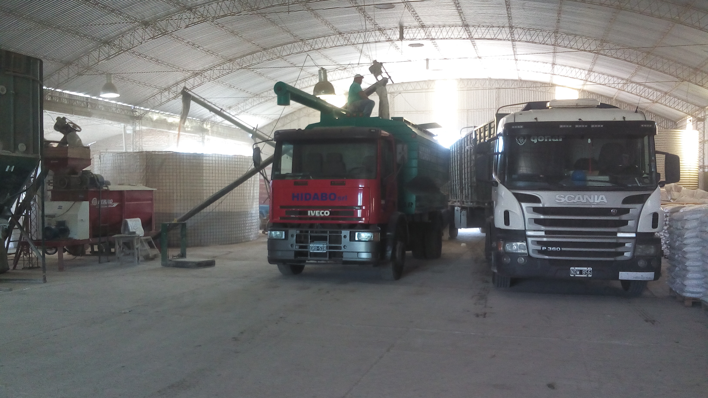
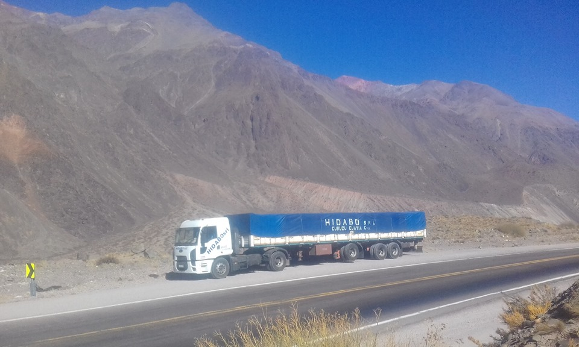
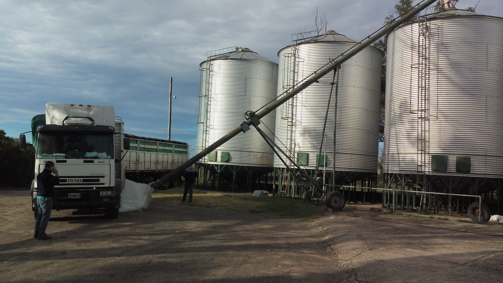
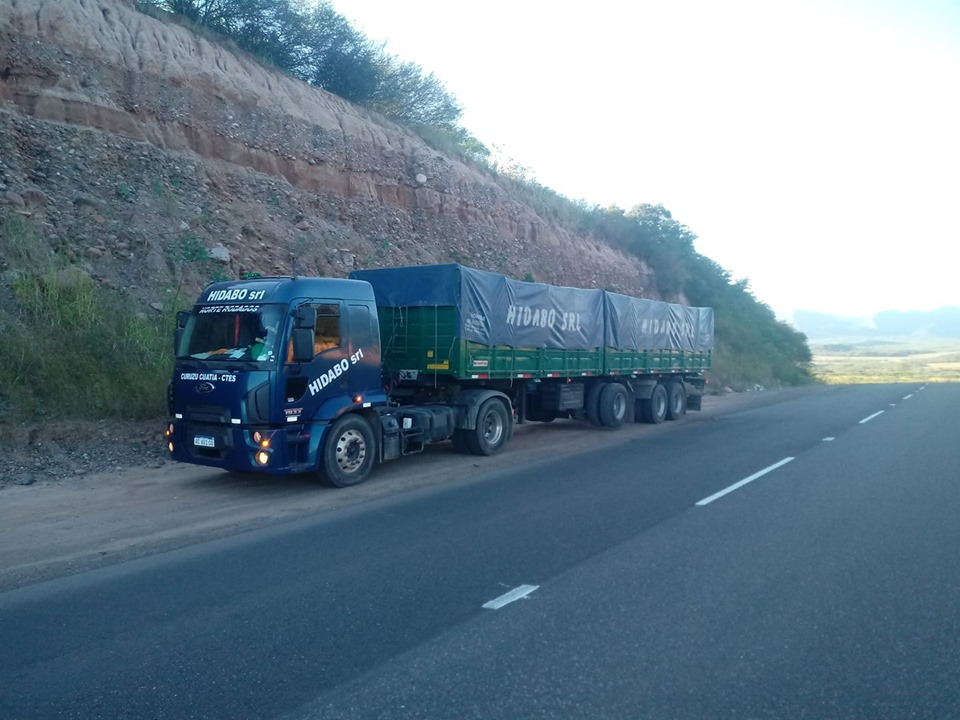
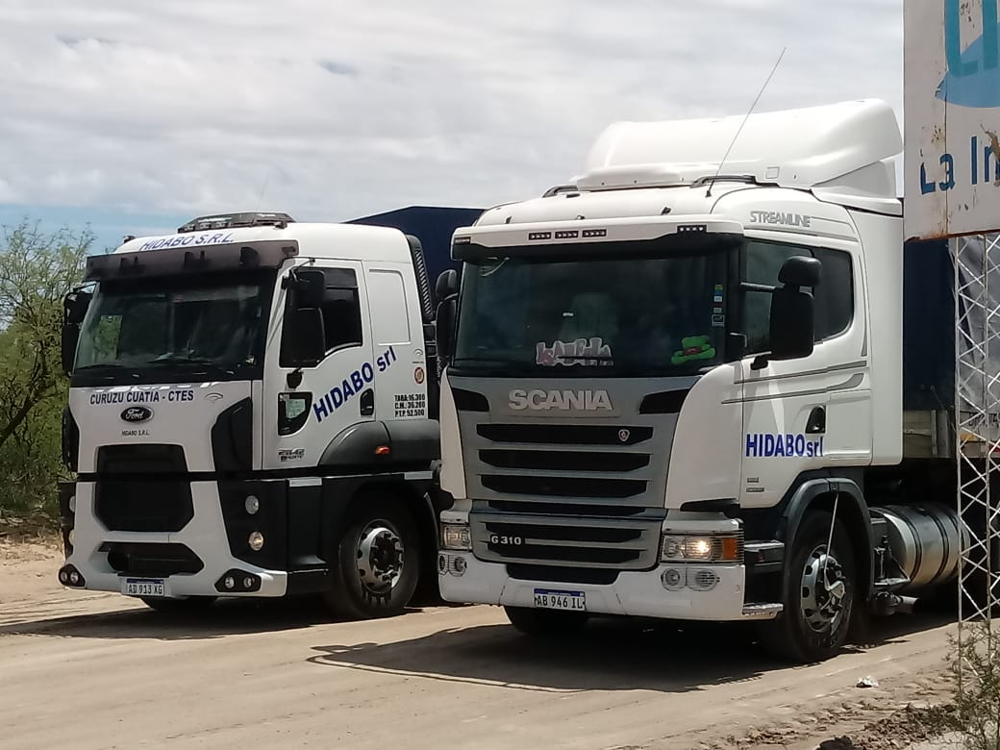
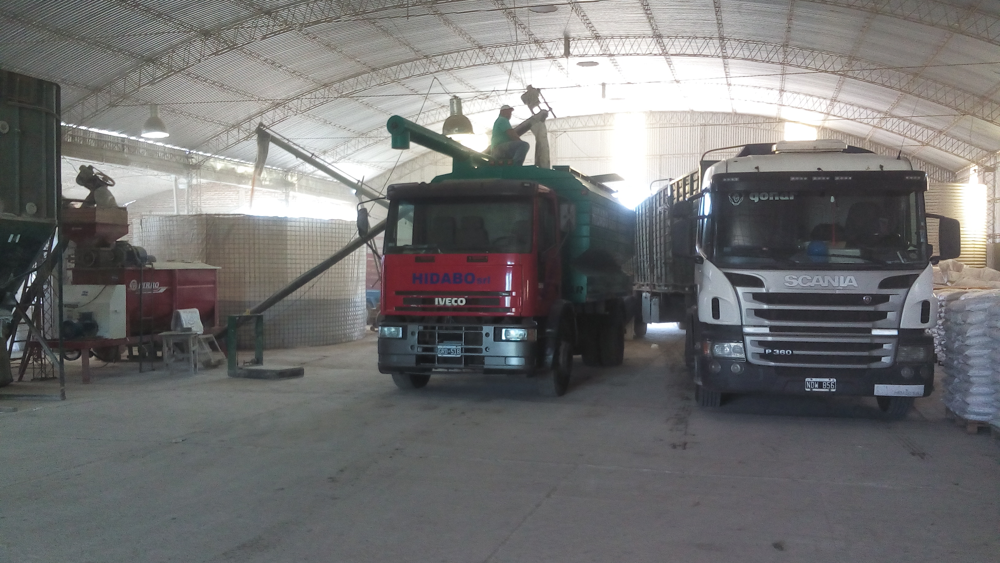
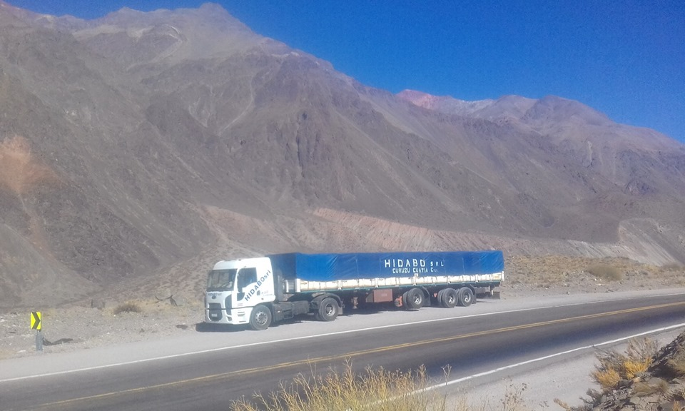
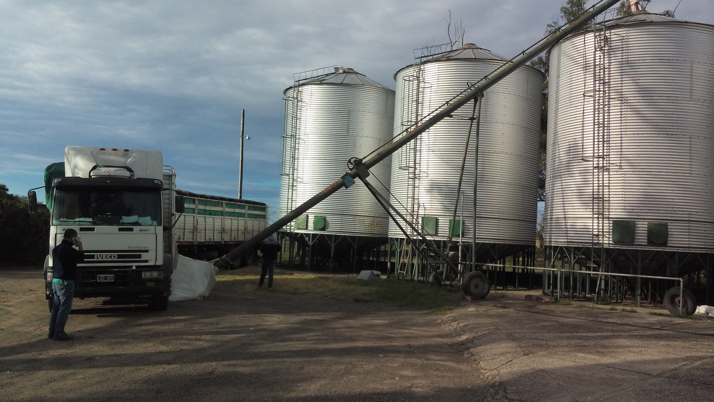
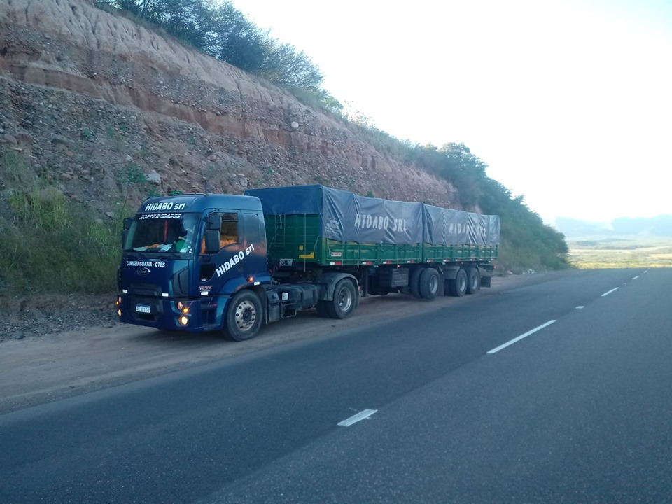
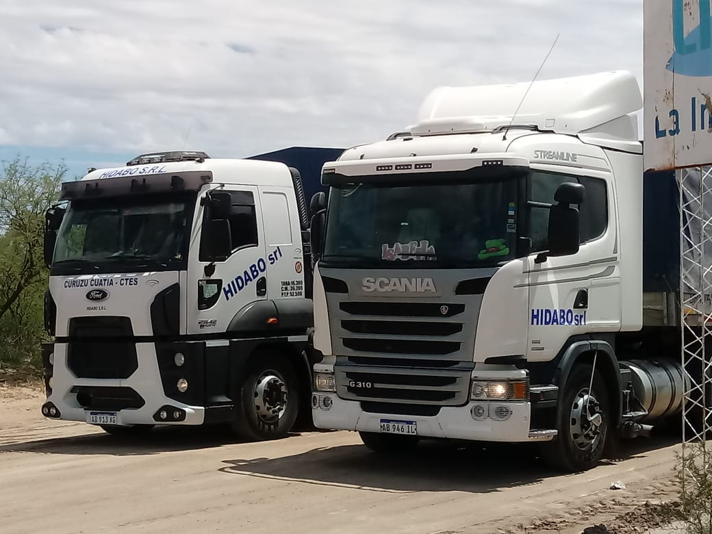

Nutriendo el campo, impulsando la producción
Suplementos minerales para bovinos y soluciones técnicas para el Agro.
Quiénes Somos
Hidabo nació en 2004 en Curuzú Cuatiá, Corrientes, como un emprendimiento familiar enfocado en dar respuesta a una necesidad del campo, la falta de fósforo en los suelos del litoral, fundamental para la nutrición bovina.
Con más de 20 años de experiencia, hemos consolidado una planta propia dedicada a la fabricación de alimentos balanceados y suplementos minerales confiables y efectivos, destacando nuestra especialización en la producción de ceniza de hueso de alta calidad.
Trabajamos codo a codo con los productores, brindando asesoramiento técnico personalizado, soluciones eficientes de logística propia y servicio de camiones jaula para transporte de ganado. De esta manera, garantizamos que cada solución llegue a tiempo y en forma.
Nuestra filosofía es simple: Cumplir con el productor.
 









Nuestros Productos
Suplementos Minerales de alta biodisponibilidad
Elaboramos suplementos de fosforo a base de ceniza de hueso. Ofrecemos fórmulas personalizadas para optimizar la salud y el rendimiento de tu ganado.
Soluciones Técnicas
Brindamos asesoramiento técnico especializado para impulsar la productividad agropecuaria. Nuestros expertos trabajan en conjunto con los productores para ofrecer soluciones a medida.
Gestión Logística
Ofrecemos entrega directa de suplementos al campo y servicio de camiones jaula para transporte de ganado, asegurando que sus productos y animales lleguen a destino de forma segura y eficiente.